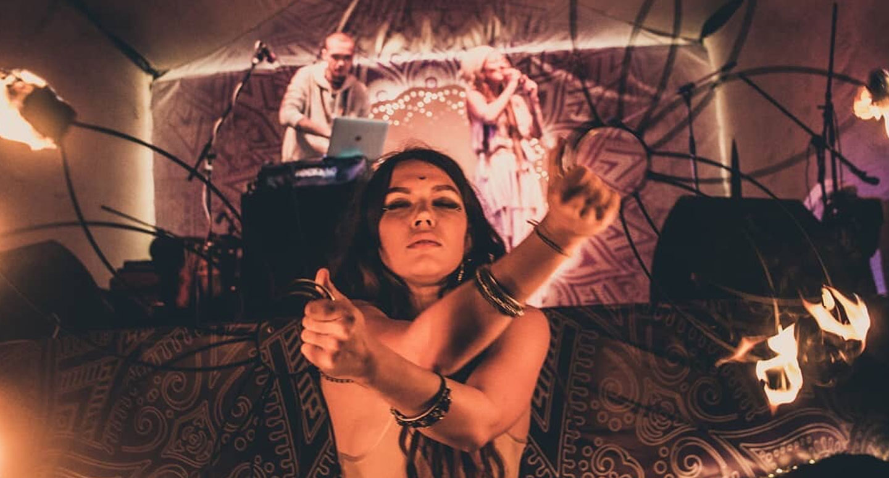
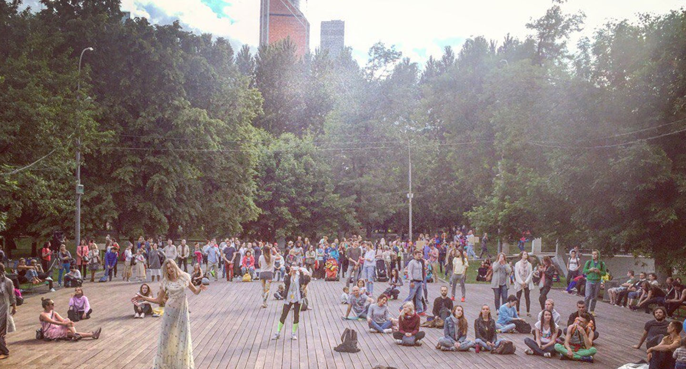

iTunes
Spotify Beatport Bandcamp
Soundcloud
EN
Этно-футуричтичные ландшафты в обрамлении струнных, африканской арфы и индийской флейты. Гиперреалистичные панорамы, временные и пространственные искажения, сотни переливающихся фракталами деталей обращающихся в одно мгновение то в даунтемпо, то в хип-хоп, то в джаз.
Стриминг и магазины:


WAYVES — это электроника, голоса и живые инструменты. А ещё это путь (way) и волны (waves), в общем-то, предельно простая метафора непредсказуемости бытия. Что касается музыки — здесь всё так же свободно: от грациозной виолончели до мистической бансури, то временами звучит мелодекламация, то оперное пение. Неизменно лишь, пожалуй, одно — бас: глубокий, обволакивающий бас, погружающий слушателя в особую атмосферу.
Музыку можно слушать бесплатно или купить на
iTunes, Google Music, Spotify, Beatport и Bandcamp
Букинг концертов и любые вопросы:
karachinsky@me.com / fb

Проект был основан Сашей Карачинским в Петербурге весной 2015 года. В маленькой квартире с видом на Неву рождались первые треки. Позже — Москва, Индия, Индонезия, Тай; горы, равнины, огромные виллы и маленькие разбитые гестхаусы, затерянные где-то в бессонных городах и на островах: на коленях ноутбук, клавиши, микрофон и поиск новых смыслов и форм.
К 2020 году стиль лайв-перфоманса сформировался вокруг постоянно обновляющейся электронной программы с использованием цифровых контроллеров (NI Maschine, Launchpad), аналоговых синтезаторов, Ableton Live и этнических духовых — индийской бансури, армянского дудука и египетской нэй.
Музыка, создающая атмосферу таинственных ритуалов, сплетенная из этнических инструментов и современных грувов: племенные барабаны, хип-хоп ритмы, нейро-бас, аналоговый синтез и семплирование; японский кото, армянский дудук, африканская нгони и мбира, индийская бансури. Яркие орнаментальные полотна сотканные из народных традиций и современных технологий.
Меняться, преломляясь в собственном восприятии. На пути к цели наблюдать за трансформацией следующего по пути, трансформацией наблюдателя, трансформацией цели. Тому, что мы чувствуем есть тысячи определений. Некоторые из них ближе, какие-то дальше от нашего восприяти в это мгновение.
В этом альбоме я снова спустя несколько релизов, обращаюсь к языку World Music: интегрирую элементы культуры Востока и Южной Азии в современную бэйс-музыку, немного заступаю на поле psy-жанров. Индия всё сильнее вплетается в меня самого и все более осознанно проявляется в орнаментах новых композиций.
Вглядываясь в горизонт, я вижу бесконечность. Взгляд впивается в линию, рассекающую воду и воздух, рисуя иллюзию. Всё циклично. Так говорят. Но знаю: у всего есть финал. Таков порядок вещей, где каждый финал есть начало нового. Жизнь порождает смерть. За смертью приходит другая жизнь. Остается лишь быть здесь. Здесь, где ничего нет и все существует одновременно.
Здесь этот круг обрывается. Цикл заканчивается, когда ты встречаешь себя. И звучит музыка.



